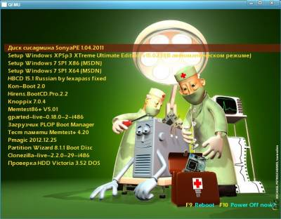
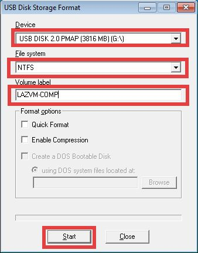
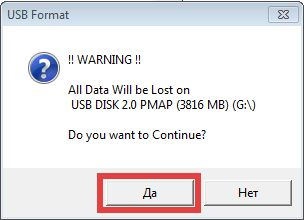
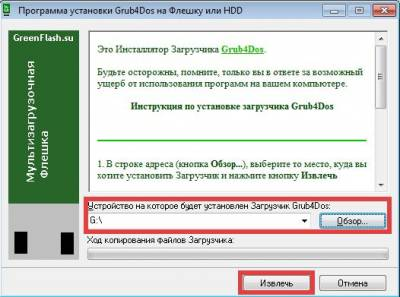
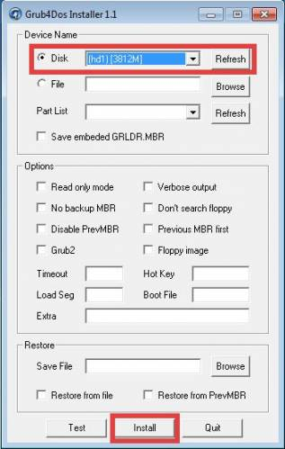
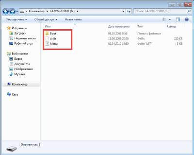
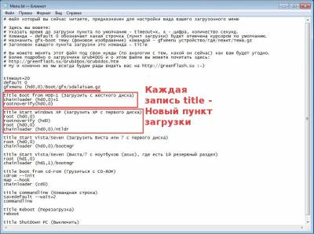
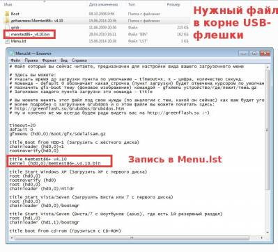
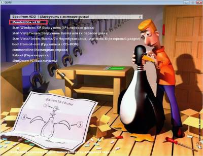

Grub4dos
- это универсальный загрузчик, который
может быть установлен на USB-флешку и
позволяющий загружать различные
операционные системы. Кроме этого, с
помощью него можно сделать не просто
загрузочный носитель, а мультизагрузочный,
то есть на одной флешке может находится
установочные и live образы различных
операционных систем и программ (Windows
XP, Windows 7, Windows 8, Ubuntu, Knoppix, Memtest86+, Hirens
BootCD, SonyaPE и т.д.), количество которых
ограниченно лишь свободным пространством
флешки. Преимущества такой
мультизагрузочного носителя очевидны:
отпадает
необходимость иметь кучу CD и DVD дисков; загрузка
и установка с USB происходит значительно
быстрее; на
нетбуках это вообще единственный
способ установки ОС, так как у них
вовсе нету DVD-привода; возможность
легко добавлять/удалять необходимые
компоненты для загрузки;
Проблемы
с загрузкой могут возникнуть только
лишь на архаичных машинах, где BIOS
материнской платы не позволяет
загружаться с USB, но во-первых, количество
таких компьютеров с каждым днём
стремится к нулю, а во-вторых, это
решается с помощью загрузочного
CD-диска с загрузчиком PLOP Boot Manager.
Итак,
что нам понадобится?
USB-флешка
объёмом от 1 Гб (естественно при таком
объёме флешка получится скорее
монозагрузочной). Я использую 64 Гб.
Этого вполе хватает как для различных
загрузочных образов, так и для других
данных. USB
Disk Storage Format Tool -
бесплатная утилита с расширенными
возможностями по форматированию
USB-дисков/карт Непосредсвтенно
сам GUI-установщик загрузчика
Grub4Dos Операционная
система Windows)). Вообще можно установить
Grub4Dos и из-под DOS или Linux
Для
начала нужно отформатировать USB-флешку
в файловую систему NTFS. Обычно на флешках
"по умолчанию" применяется FAT32.
Даже если вы не собираетесь ипользовать
носитель в качестве загрузочного, то
неплохо бы использовать именно NTFS,
особенно если флешка имеет объём более
4 Гб, так как масимальный размер файла
в FAT32 составляет 4 Гб; а также NTFS имеет
множество преимуществ перед более
ранней системой FAT32:
Способность
автоматически восстанавливаться
после некоторых ошибок диска (FAT32 не
обладает такой способностью). Улучшенная
поддержка больших жёстких дисков. Более
высокая степень безопасности. Возможно
использование разрешений и шифрования
для запрета пользовательского доступа
к определенным файлам.
Штатными
средствами Windows этого сделать не
представляется возможности, поэтому
используем USB Disk Storage Format Tool для
форматирования. Внимание! При
форматировании все данные, которые
находятся на носителе стираются. Не
забываем об этом и не теряем свои
файлы. В поле Device выбираем нужный
USB-носитель; File system - NTFS; Volume label - указываем
желаемую метку флешки или оставляем
поле пустым. По кнопке Start и ещё одного
подтверждения происходит форматирование
носителя.


Теперь
запускаем установщик Grub4DOS.exe, через
"Обзор" выбираем USB-флешку,
извлекаем файлы.

Ставим
в поле Disc птичку и выбираем нашу флешку.
В списке будут также разделы вашего
жесткого диска, будьте внимательны,
ориентируйтесь на объём. В данном
случае тестовый USB-носитель имеет
объём 4 Гб (3812М). Остальные настройки
не трогаем и жмём Install.

После
этого на USB появились необходимые
файлы и она стала загрузочной. Осталось
лишь подсунуть на носитель необходимые
файлы для загрузки нужных операционных
систем и программ.

Что
за файлы перед нами? Menu.lst - наиглавнейший
конфигурационный файл, с которым
предстоит работать. Это по сути
текстовый файл, его можно открывать
с помощью обычного блокнота. grldr -
непосредственно загрузчик. В папке
Boot находится вложенная папка gfx, где
хранится тема оформления Grub4dos. Большую
коллекцию подходящих тем можно
взять здесь.
Кладём тему в gfx и подправляем в Menu.lst
имя нашей новой темы оформления.
Разберём немножко структуру Menu.lst.
Строки начинающиеся с символа # - это
комментарии, которые никак не влияют
на конфигурацию загрузчика. Стоит
привести комментарии из Menu.lst
#
Файл который вы сейчас читаете,
предназначен для настройки вида вашего
загрузочного меню
#
Здесь вы можете:
#
Указать время до загрузки пункта по
умолчанию - timeout=х, х - цифра, количество
секунд.
#
Команда - default 0 обозначает какая строчка
(пункт загрузки) будет отмечена курсором
по умолчанию.
#
Назначить gfx-boot тему (фоновое изображение)
командой - gfxmenu устройство/где/лежит/тема.gz
#
Заголовок каждого пункта загрузки
это команда - title
#
Вы можете менять этот файл под свои
нужды (по аналогии с тем, какой он
сейчас) как вам будет угодно.
#
Более подробно о загрузчике Grub4DOS и о
этом файле вы можете почитать
здесь:
# http://greenflash.su/Grub4Dos/Grub4dos.htm
#
Ну и конечно же мы всегда будем рады
видеть вас на http://greenflash.su :-)

Теперь
самое важное. Как добавлять загрузочные
образы? Вся прелесть Grub4dos в его
универсальности и всеядности. С помощью
него можно загрузить практически всё,
что угодно, в том числе обычные iso
образы, которые предварительно
распаковываются в оперативную память
и т.д. Но для этого нужно знать что и
как прописывать в конфигурационный
файл Menu.lst. Самое же простое это обратить
внимание на эти две раздачи с
Рутрекера: PUH
Edition v2, Конструктор
USB 1.
Там собрано практически всё необходимое:
всевозможные версии операционных
систем семейства Windows, Linux и не только;
и, что наиболее важно, кроме самих
файлов в архивах есть необходимые
строчки, которые нужно прописать в
файл Menu.lst. Замечу, что можно скачивать
только необходимые файлы, а не всю
раздачу целиком.
Для наглядности
давайте добавим на флешку Memtest86+ v4.10
из раздачи Конструктор USB. Запускаем
загруженный файл "добавляем
Memtest86+ v4.10.exe" и извлекаем файлы на
загрузочную флешку. Идём на USB и видим
одноименную папку "добавляем
Memtest86+ v4.10.exe", в которой есть текстовый
файлик "инструкция". Открываем
и читаем:
1.
Копируем образ диска и архив на
вашу флешку .
2.
Открываем блокнотом файл Menu.lst и
добовляем туда такие строки:
title
Memtest86+ v4.10
kernel
(hd0,0)/memtest86+_v4.10.bin
Выполняем
это, загружаемся с носителя и видим
нужный пункт загрузки.


Мои
видеоуроки о том, как загружаться с
внешнего носителя смотрите тут и тут
Далее
хотелось бы рассказать немного
поподробней как "руками" добавить
те или иные компоненты:
1. Добавляем
Windows XP
Скачиваем Microsoft
Windows XP Professional SP3 Russian VL и
извлекаем все файлы и папки из этого
архива в корень USB-носителя Прописываем
в Menu.lst следующие строчки title
Установка Microsoft Windows XP Professional SP3 Russian
VL
root
(hd0,0)
map
--mem /WINSETUP/XPpSP32.ISO (0xff)
map
(hd0) (hd1)
map
(hd1) (hd0)
map
--hook
root
(0xff)
chainloader
/I386/SETUPLDR.BIN
2.
Добавляем Windows 7 х86 SP1 Russian MSDN update
13.05.2014. Это оригинальный образ от
Microsoft. Изменения минимальны: разблокирован
выбор редакций при установке;
интегрированы все обновления по
состоянию на 13 мая 2014 года; активация
не применялась.
Скачиваем Windows
7 х86 SP1 Russian MSDN update 13.05.2014 и
извлекаем все файлы и папки из этого
архива в корень USB-носителя Прописываем
в Menu.lst следующие строчки title
Установка Windows 7 х86 SP1 Russian MSDN update
13.05.2014
map
--unmap=0:0xff
map
--unhook
root
(hd0,0)
chainloader
/bootmgr2
3. Добавляем Windows
7 х64 SP1 Russian MSDN update 13.05.2014. Это оригинальный
образ от Microsoft. Изменения минимальны:
разблокирован выбор редакций при
установке; интегрированы все обновления
по состоянию на 13 мая 2014 года; активация
не применялась.
Скачиваем Windows
7 х64 SP1 Russian MSDN update 13.05.2014 и
извлекаем все файлы и папки из этого
архива в корень USB-носителя Прописываем
в Menu.lst следующие строчки title
Установка Windows 7 х64 SP1 Russian MSDN update
13.05.2014
map
--unmap=0:0xff
map
--unhook
root
(hd0,0)
chainloader
/bootmgr1
4.
Добавляем Windows 8 x86_x64. На основе
оригинальных образов от Microsoft. Изменения
минимальны: разблокирован выбор
редакций при установке; обе разрядности
в одной упаковке; активация не
применялась.
Скачиваем Windows
8 x86_x64 и
извлекаем все файлы и папки из этого
архива в корень USB-носителя Прописываем
в Menu.lst следующие строчки title
Установка Windows 8 (x86_x64)
chainloader
/win7/bootwin8
5.
Добавляем Windows 8.1 update 1 Professional (x86).
Оригинальный образ. Активация не
применялась. Iso-образ, который в архиве
лежит в папке Boot должен быть на флешке
дефрагментирован. В противном случае
получите ошибку Error 60: File for drive emulation
must be in one contiguous disk area.
Скачиваем Windows
8.1 update 1 Professional (x86) и
извлекаем все файлы и папки из этого
архива в корень USB-носителя Прописываем
в Menu.lst следующие строчки title
Установка Windows 8.1 update 1 Professional (x86)
set
MYISO=WIN8x86.iso
map
--mem (md)0x800+4 (99)
map
/Boot/%MYISO% (0xff)
checkrange
0x80 read 0x8280 && map (hd0) (hd1)
checkrange
0x80 read 0x8280 && map (hd1) (hd0)
map
--hook
write
(99)
[FiraDisk]\nStartOptions=cdrom,vmem=find:/Boot/%MYISO%;\n\0
chainloader
(0xff)/BOOTMGR || chainloader (0xff)
6.
Добавляем Windows 8.1 update 1 Professional (x64).
Оригинальный образ. Активация не
применялась. Iso-образ, который в архиве
лежит в папке Boot должен быть на флешке
дефрагментирован. В противном случае
получите ошибку Error 60: File for drive emulation
must be in one contiguous disk area.
Скачиваем Windows
8.1 update 1 Professional (x64) и
извлекаем все файлы и папки из этого
архива в корень USB-носителя Прописываем
в Menu.lst следующие строчки title
Установка Windows 8.1 update 1 Professional (x64)
set
MYISO=WIN8x64.iso
map
--mem (md)0x800+4 (99)
map
/Boot/%MYISO% (0xff)
checkrange
0x80 read 0x8280 && map (hd0) (hd1)
checkrange
0x80 read 0x8280 && map (hd1) (hd0)
map
--hook
write
(99)
[FiraDisk]\nStartOptions=cdrom,vmem=find:/Boot/%MYISO%;\n\0
chainloader
(0xff)/BOOTMGR || chainloader (0xff)
7.
Добавляем Windows 7/8/8.1. Таким способом
можно добавить только какой-либо один
дистрибутив ко всем выше и ниже
перечисленным.
Извлекаем
все файлы из iso образа Windows 7/8/8.1 в корень
флешки Прописываем
в Menu.lst следующие строчки title
Установка Windows 7/8/8.1
map
--unmap=0:0xff
map
--unhook
root
(hd0,0)
chainloader
/bootmgr
8.
Добавляем Ubuntu 14.04 x86 (будет справедливо
и для более ранних версий)
Создаём
в корне флешки папку ubuntu Копируем
в эту папку образ
дистрибутива ubuntu-14.04-desktop-i386.iso и
два файла из этого образа: initrd.lz и vmlinuz Прописываем
в Menu.lst следующие строчки title
Установка ubuntu-14.04-desktop-i386
kernel
/ubuntu/vmlinuz
iso-scan/filename=/ubuntu/ubuntu-14.04-desktop-i386.iso
boot=casper only-ubiquity initrd=/casper/initrd.lz locale=ru_RU
quiet splash --
initrd
/ubuntu/initrd.lz
9.
Добавляем Ubuntu 14.04 x64 (всё аналогично,
кроме небольшого изменения)
Создаём
в корне флешки папку ubuntu Копируем
в эту папку образ
дистрибутива ubuntu-14.04-desktop-amd64.iso и
два файла из этого образа: initrd.lz и vmlinuz.efi Прописываем
в Menu.lst следующие строчки title
Установка ubuntu-14.04-desktop-amd64
kernel
/ubuntu/vmlinuz.efi
iso-scan/filename=/ubuntu/ubuntu-14.04-desktop-amd64.iso
boot=casper only-ubiquity initrd=/casper/initrd.lz locale=ru_RU
quiet splash --
initrd
/ubuntu/initrd.lz
10.
Добавляем практически любой iso образ,
который будет предварительно
распаковываться в оперативную память
компьютера. Конечно при этом количество
ОЗУ должно быть больше размера этого
самого iso-шника, иначе получите ошибку
Создаём
в корне флешки папку iso Копируем
в эту папку нужный iso образ с именем,
к примеру, file.iso Прописываем
в Menu.lst следующие строчки title
Загрузка file.iso
map
/iso/file.iso (0xFF) || map --mem /iso/file.iso (0xFF)
map
--hook
chainloader
(0xFF)
11.
Добавляем Memtest86+ V5.01 (тестирование
оперативной памяти на наличие ошибок).
Подробнее о программе в моей
статье Memtest86+v4.20
и тестирование оперативной памяти
Копируем
в корень флешки Memtest86+
V5.01.iso Прописываем
в Menu.lst следующие строчки title
запустить Memtest86+ V5.01 (тестирование
ОЗУ)
map
--mem /memtest86+-5.01.iso (0xff)
map
--hook
chainloader
(0xff)
boot
12.
Добавляем Live-USB сборку SonyaPE 1.04.2011 на
основе Windows XP. Это так называемая живая
система с кучей полезного софта,
которая может быть запущена прямо из
флешки на любом компьютере.
Скачиваем SonyaPE_01.04.2011 и
извлекаем все файлы и папки из этого
архива в корень USB-носителя Прописываем
в Menu.lst следующие строчки title
Запустить Live-USB SonyaPE 1.04.2011
chainloader
/S386/SETUPLDR.BIN
13. Добавляем
Live-USB сборку W7PE_x86-x64_UEFI_23.05.2013 на основе
Windows 7. Имеются обе разрядности: 32 и 64
бита. Это так называемая живая система
с кучей полезного софта, которая может
быть запущена прямо из флешки на любом
компьютере.
Скачиваем W7PEx86x64(UEFI)23.05.2013 и
извлекаем все файлы и папки из этого
архива в корень USB-носителя Прописываем
в Menu.lst следующие строчки title
Запустить Live-USB W7PE x86_x64 (UEFI) 23.05.2013
find
--set-root /XMPE/bootmgr
chainloader
/XMPE/bootmgr
boot
14.
Добавляем Live-USB Knoppix 7.0.4 на основе Debian
Linux.
Скачиваем Knoppix
7.0.4 и
извлекаем все файлы и папки из этого
архива в корень USB-носителя Прописываем
в Menu.lst следующие строчки title
Запустить Live-USB Knoppix 7.0.4
root
(hd0,0)
kernel
/BOOT/Boot_Knoppix_7.0.4/linux ramdisk_size=100000 init=/etc/init
lang=ru apm=power-off vga=791 nomce loglevel=0 quiet
BOOT_IMAGE=knoppix knoppix knoppix_dir=KNOPPIX
initrd
/BOOT/Boot_Knoppix_7.0.4/minirt.gz
15.
Добавляем Live-USB Pmagic 2012.12.25 на основе
Linux. Небольшой дистрибутив,
предназначенный для разбиения жёстких
дисков и восстановления данных.
Скачиваем Pmagic
2012.12.25 и
извлекаем все файлы и папки из этого
архива в корень USB-носителя Прописываем
в Menu.lst следующие строчки title
Запустить Live-USB Pmagic 2012.12.25
map
--unmap=0:0xff
map
--unhook
root
(hd0,0)
map
/pmagic/pmagic_2012_12_25.iso (0xff) || map --mem
/pmagic/pmagic_2012_12_25.iso (0xff)
map
--hook
root
(0xff)
configfile
/grub4dos.lst || chainloader (0xff)
map
--unmap=0:0xff
16.
Добавляем Live-USB PuppyRus-203 на основе Linux.
Скачиваем PuppyRus-203 и
извлекаем все файлы и папки из этого
архива в корень USB-носителя Прописываем
в Menu.lst следующие строчки title
Запустить Live-USB PuppyRus-203-FF-m
configfile
(hd0,0)/boot/Puppy/menu.lst
17.
Добавляем Victoria 3.52. (Компьютерная
программа, предназначенная для оценки
работоспособности, тестирования и
мелкого ремонта жёстких дисков)
Скачиваем Victoria
3.52 и
извлекаем все файлы и папки из этого
архива в корень USB-носителя Прописываем
в Menu.lst следующие строчки title
Запустить Victoria 3.52 (утилита для
низкоуровневой диагностики жесткого
диска)
map
--mem /boot/victoria.ima (fd0)
map
--hook
chainloader
(fd0)+1
rootnoverify
(fd0)
map
--floppies=1
boot
18.
Добавляем MHDD v4.6. (Компьютерная программа,
предназначенная для оценки
работоспособности, тестирования и
мелкого ремонта жёстких дисков)
Скачиваем MHDD
v4.6 и
извлекаем все файлы и папки из этого
архива в корень USB-носителя Прописываем
в Menu.lst следующие строчки title
Запустить MHDD v4.6 (утилита для
низкоуровневой диагностики жесткого
диска)
map
--mem /MHDD_v4.6.ima (fd0)
map
--hook
chainloader
(fd0)+1
rootnoverify
(fd0)
map
--floppies=1
19.
Добавляем Acronis Rescue Media 2010 Rus FULLv2.
(Универсальный загрузочный диск,
содержащий пакет программ для полного
резервного копирования, позволяющий
создавать точные образы жесткого
диска и/или отдельных его разделов,
управлять разделами — создание,
перемещение, слияние, деление)
Скачиваем Acronis
Rescue Media 2010 Rus FULLv2 и
извлекаем все файлы и папки из этого
архива в корень USB-носителя Прописываем
в Menu.lst следующие строчки title
Запустить Acronis Rescue Media 2010 Rus FULLv2
find
--set-root /arsm2010.iso
map
/arsm2010.iso (0xff) || map --mem /arsm2010.iso (0xff)
map
--hook
chainloader
(0xff)
20.
Добавляем Clonezilla-live-2.2.0-29-i486. (Свободное
программное обеспечение с открытым
исходным кодом, предназначенное для
клонирования дисков и отдельных
разделов жёсткого диска, а также
создания резервных копий и аварийного
восстановления системы)
Скачиваем Clonezilla-live-2.2.0-29-i486 и
извлекаем все файлы и папки из этого
архива в корень USB-носителя Прописываем
в Menu.lst следующие строчки title
Запустить Clonezilla-live-2.2.0-29-i486
root
(hd0,0)
kernel
/clonezilla/live/vmlinuz boot=live config
live-media-path=/clonezilla/live
initrd=/clonezilla/live/initrd.img
21.
Добавляем gparted-live-0.18.0-2-i486. (Live CD версия
на основе Debian Linux программы GParted, которая
является редактором дисковых разделов
предназначенная для различных операций
с разделами (и файловыми системами,
находящимися на них), таких как:
создание, уничтожение, изменение
размера, перемещение, проверка и
копирование)
Скачиваем gparted-live-0.18.0-2-i486 и
извлекаем все файлы и папки из этого
архива в корень USB-носителя Прописываем
в Menu.lst следующие строчки title
Запустить gparted-live-0.18.0-2-i486
find
--set-root /gparted/live/vmlinuz
kernel
/gparted/live/vmlinuz boot=live config noswap noprompt
live-media-path=/gparted/live toram=filesystem.squashfs
ip=frommedia nosplash
initrd
/gparted/live/initrd.img
22.
Добавляем Partition wizard 8.1.1. (Менеджер для
работы с разделами жесткого диска. С
его помощью можно изменять размер
раздела, создавать новый раздел на
жестком диске, удалять и форматировать
уже существующие разделы. Позволяет
работать не только с отдельными
жесткими дисками, но и дисками,
объединенными в RAID-массивы)
Скачиваем Partition
wizard 8.1.1 и
извлекаем все файлы и папки из этого
архива в корень USB-носителя Прописываем
в Menu.lst следующие строчки title
Запустить Partition Wizard 8.1.1 Boot Disc
find
--set-root /Partition_wizard_8.1/bzImage
kernel
/Partition_wizard_8.1/bzImage ramdisk_size=104858 root=/dev/ram0
rw
initrd
/Partition_wizard_8.1/tinycore.gz
23.
Добавляем Kon-Boot 2.0. (Программное
обеспечение, которое позволяет изменять
содержание ядра Linux/Windows на лету загружая
программу с live cd/usb. Позволяет сбрасывать
пароли в Linux, так и становиться root
пользователем, не вбивая правильный
пароль. Для Windows систем утилита позволяет
входить в любой защищенный паролем
профиль без знания пароля)
Скачиваем Kon-Boot
2.0 и
извлекаем все файлы и папки из этого
архива в корень USB-носителя Прописываем
в Menu.lst следующие строчки title
Запустить Kon-Boot 2.0
set
kon=konboot.gz
find
--set-root /IMAGES/KONBOOT.GZ | set iscd=
find
--set-root /IMAGES/KONBOOT.GZ && set kon=KONBOOT.GZ
map
--mem /IMAGES/%kon% (fd0)
map
--hook
chainloader
(fd0)+1
if
not "%iscd%"=="(cd)" pause --wait=2 HDD
SWAP
if
not "%iscd%"=="(cd)" map (hd1) (hd0)
map
--hook
rootnoverify
(fd0)
map
--floppies=1
Остались
вопросы? Задавайте их в комментариях!
А
пока на этом остановлюсь. Статья будет
обновляться и дополняться материалом.
Всё
эти пункты будут работать на одной
флешке без проблем (при достаточном
её размере конечно).
Удачных загрузок
с USB-носителей)))
|
{kind=link}
{kind=link}
{kind=link}
{kind=link}
{kind=link}
{kind=link}
{kind=link}